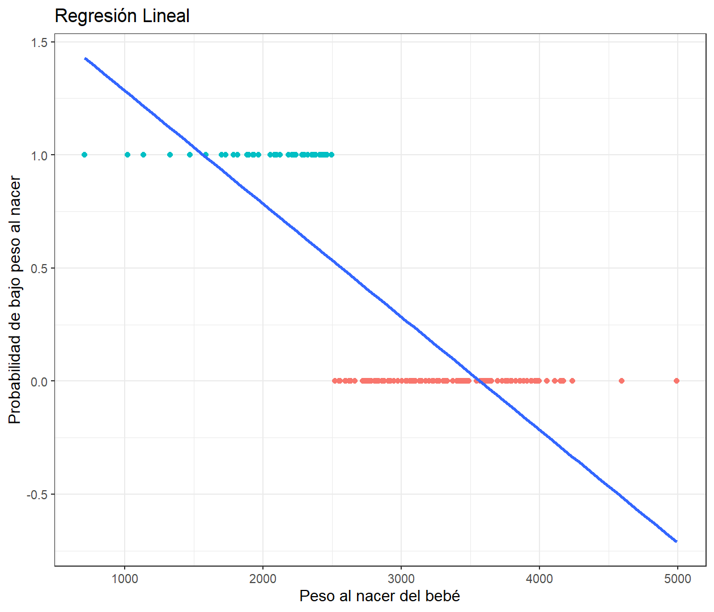
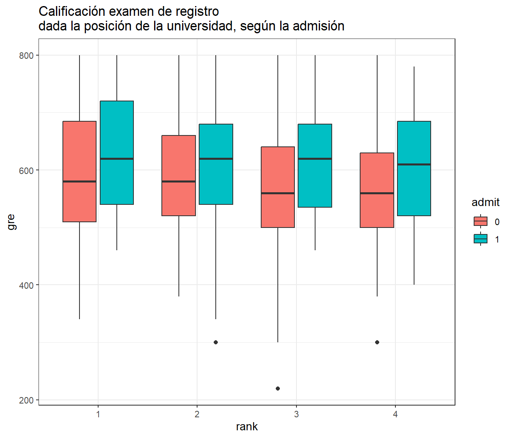
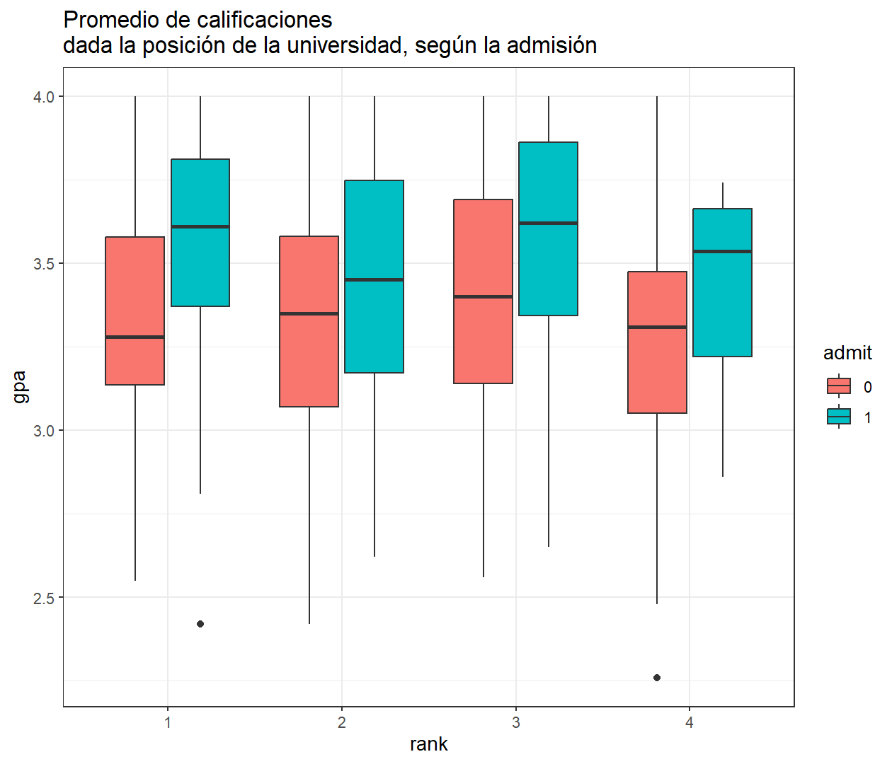
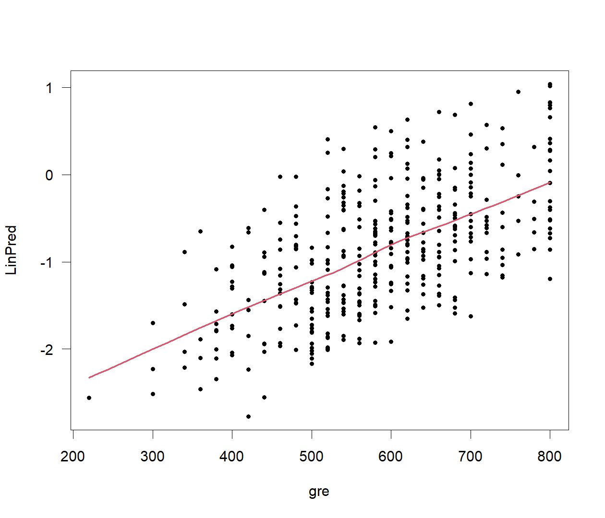
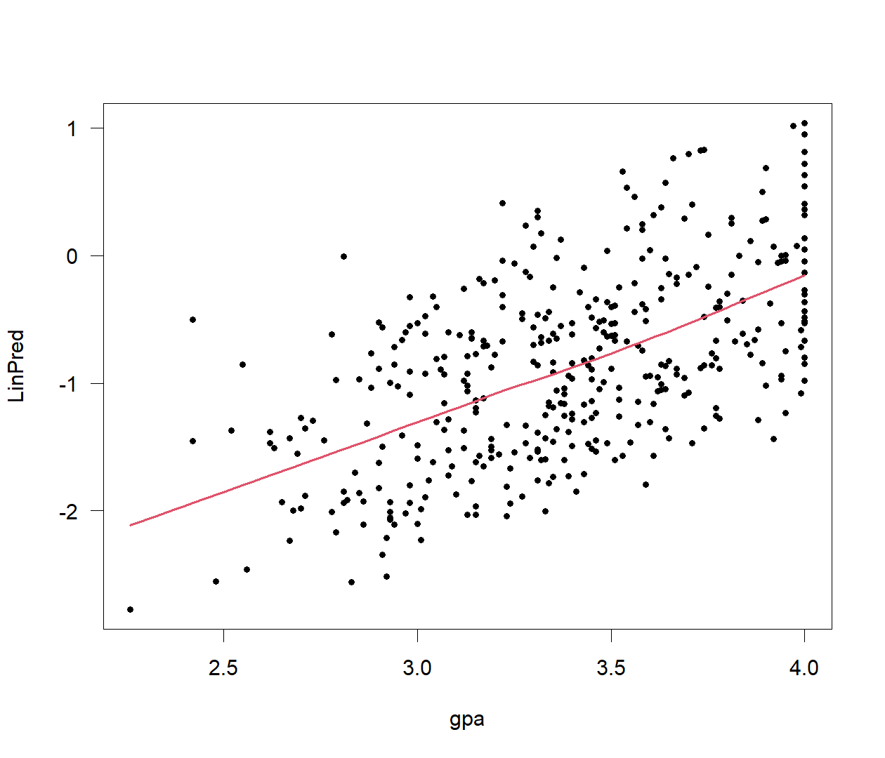
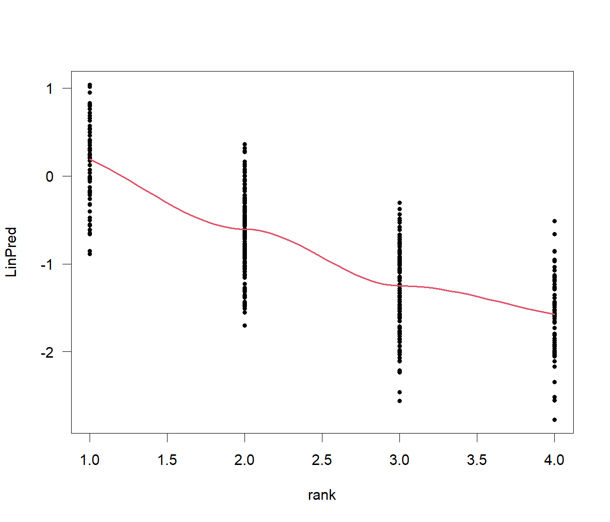
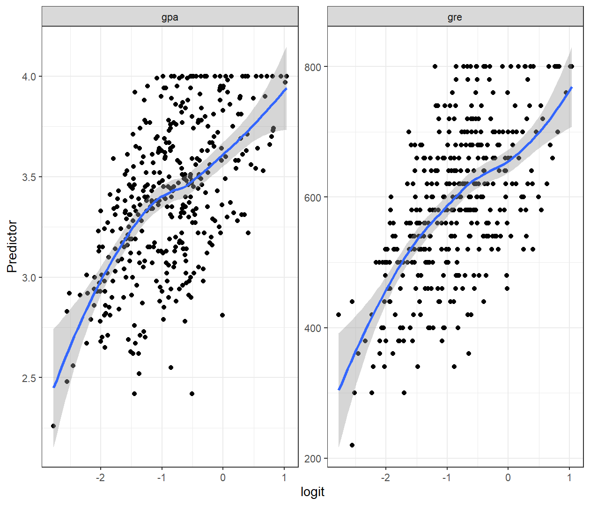
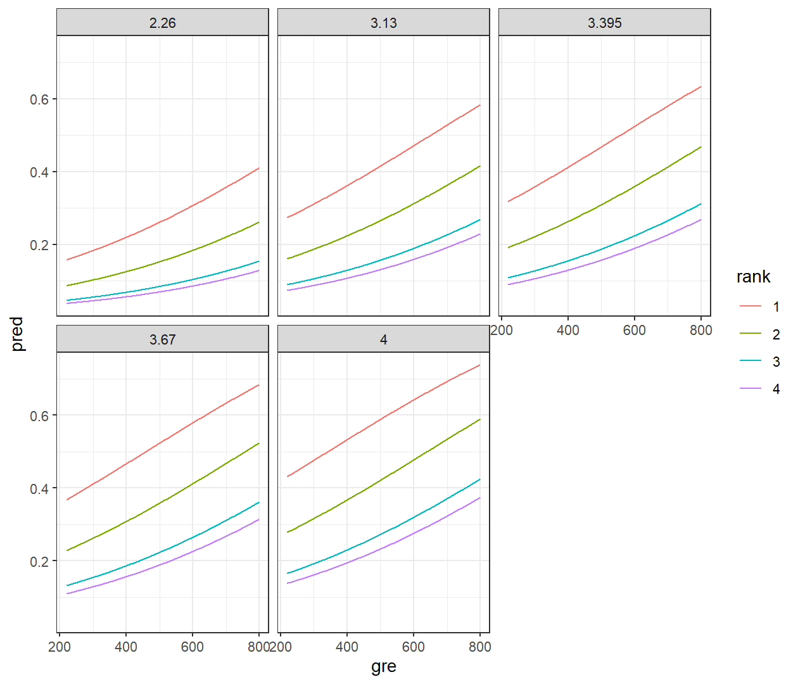
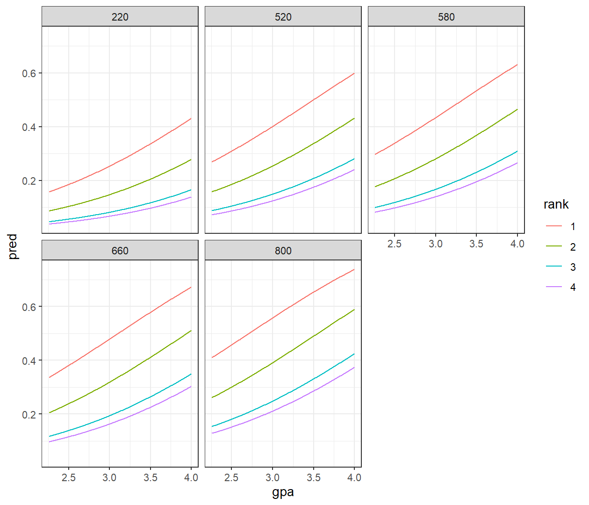
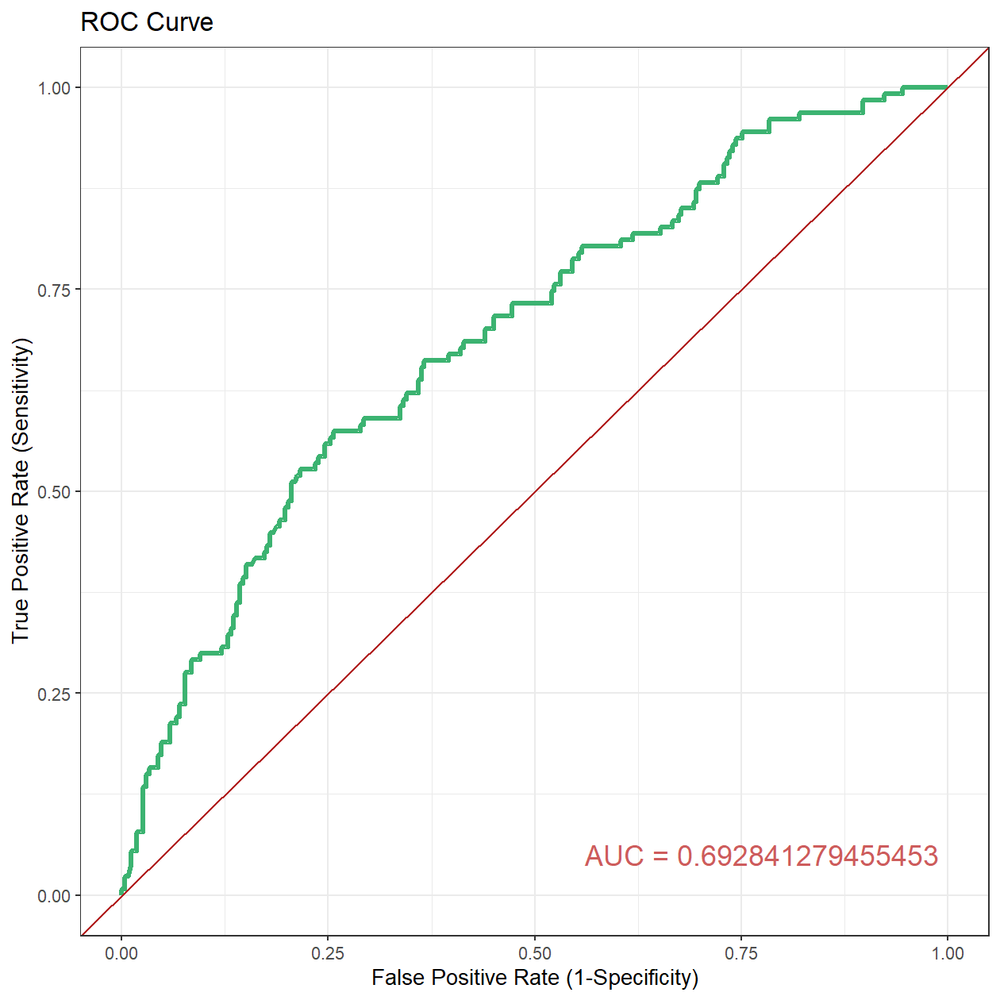

El interés de la regresión logística es establecer la relación entre unas variables independientes y una variable dependiente que es cualitativa o categórica, en particular de dos niveles o dicotómica. Esta regresión hace parte de los modelos lineales generalizados.
Una variable dicotómica, es una variable que puede tomar solo uno de dos valores mutuamente excluyentes. Estos valores, por lo general, se codifican como \(Y = 1\) para exito y \(Y = 0\) para fracaso. Las variables dicotómicas incluyen aquellas cuyos dos posibles valores son categorías como: muerte o no-muerte; curado o no-curado; enfermedad ocurrida o enfermedad no-ocurrida; fumador o no-fumador.
\[y = \beta_0+\beta_1x\]
La ecuación anterior denota un modelo de regresión lineal, note que la variable respuesta para este caso solamente toma valores de \(0\) o \(1\). Cuando se ajusta una regresión lineal en estos casos, como el resultado es el ajuste de una recta, se obtienen valores de \(Y\) menores a \(0\) y mayores a \(1\), lo cual indica una contradicción con el dominio de los datos de la variable.
ggplot(MASS::birthwt,aes(x=bwt,y=low))+
geom_point(aes(col=factor(low)))+
geom_smooth(method = "lm",se=F)+
theme_bw()+
labs(title = "Regresión Lineal",
y = "Probabilidad de bajo peso al nacer",
x = "Peso al nacer del bebé")+
theme(legend.position = "none")
Al tratarse de una recta, si por ejemplo, se predice la probabilidad de bajo peso al nacer para un bebé que tiene un peso menor de 1500 gr, el valor obtenido es mayor que 1.
Para evitar este problema la regresión logística transforma el valor devuelto por la regresión lineal empleando una función cuyo resultado garantiza que siempre esté entre \(0\) y \(1\), está función se le conoce como función logística o logit.
\[\pi(x)=\cfrac{1}{1+e^{-x}}\]
Sustituyendo la ecuación de regresión lineal, teniendo en cuenta que \(y\) es una probabilidad, se tiene que:
\[\begin{align*} p=&\cfrac{1}{1+e^{-(\beta_0+\beta_1 x)}}\\\\ =&\cfrac{e^{-(\beta_0+\beta_1 x)}}{1+e^{-(\beta_0+\beta_1 x)}} \end{align*}\]
Para despejar la ecuación, de tal manera que la parte lineal se conserve, se transforma la variable respuesta utilizando el logarítmo natural, entonces la ecuación de regresión logística es:
\[\text{Ln}\left[\frac{p}{1-p}\right]=\beta_0+\beta_1x\]
La parte izquierda de la ecuación se le conoce como logarítmo de Odds o logit, un Odds corresponde a la razón entre la probabilidad de que un evento ocurra y la probabilidad de que no ocurra.
Supongamos que en una muestra de 100 pacientes que han recibido tratamiento médico se ha alcanzado el éxito en 75 de ellos. Si se divide la probabilidad de curación \((p =75/100=0.75)\) por la probabilidad de no curación \((q=25/100=0.25)\), se obtendrá la Odds de curación para ese tratamiento, que valdría \((0.75/0.25=3)\).
¿Cómo se interpreta una Odds de 3 en el ejemplo? Se entendería que por cada paciente en que no se alcanzó el éxito terapéutico hay 3 en que sí se logró, es decir, con ese tratamiento la probabilidad de éxito es 3 veces mayor que la de fracaso. Tienen una ventaja de 3 para curarse.
En términos generales, es posible modelar varias variables para una solo respuesta, es decir, construir un modelo logístico múltiple el cual es de la forma.
\[\text{Ln}\left[\frac{p}{1-p}\right]=\beta_0+\beta_1x+\beta_2x_2+\dots+\beta_i x_i\]
Relación entre la proporción y el Odds:
Relación entre Odds y logit:
Los siguientes datos corresponden a una investigación en el cuál el interés es evaluar cómo las calificaciones del examen de registro de graduados (GRE), el promedio de las calificaciones del graduado (GPA) y el prestigio de la institución de pregrado (rank), afectan en la admisión a la escuela de postgrados, donde la variable respuesta es la variable binaria admitido/no-admitido.
Necesitamos los siguientes paquetes:
require(MASS)
require(car)
require(aod) #install.packages("aod")
require(ROCR) # install.packages("ROCR")
require(ggplot2)
require(dplyr)Los datos están disponibles en la Universidad de California (UCLA).
# cargar los datos
datos <- read.csv("https://stats.idre.ucla.edu/stat/data/binary.csv")
# Cambiar variables a factor
datos <-datos %>% mutate(admit=factor(admit),
rank=factor(rank))Análisis descriptivos de las variables
# resumen general
summary(datos)## admit gre gpa rank
## 0:273 Min. :220.0 Min. :2.260 1: 61
## 1:127 1st Qu.:520.0 1st Qu.:3.130 2:151
## Median :580.0 Median :3.395 3:121
## Mean :587.7 Mean :3.390 4: 67
## 3rd Qu.:660.0 3rd Qu.:3.670
## Max. :800.0 Max. :4.000# Desviaciones estándar de las variables
datos %>% summarise_at(vars(gre,gpa),sd)## gre gpa
## 1 115.5165 0.3805668# Tabla de contingencia
xtabs(~admit+rank,data = datos)## rank
## admit 1 2 3 4
## 0 28 97 93 55
## 1 33 54 28 12# Gráficos descriptivos
ggplot(datos,aes(x=rank,y=gre,fill=admit))+
geom_boxplot()+
theme_bw()+
ggtitle("Calificación examen de registro\ndada la posición de la universidad, según la admisión")
ggplot(datos,aes(x=rank,y=gpa,fill=admit))+
geom_boxplot()+
theme_bw()+
ggtitle("Promedio de calificaciones\ndada la posición de la universidad, según la admisión")
Para construir el modelo logístico necesitamos la función
glm que significa modelo lineal generalizado y entre los
argumentos es necesario especificar la familia binomial.
mod <- glm(admit~.,data=datos,family = binomial(link = "logit"))
summary(mod)##
## Call:
## glm(formula = admit ~ ., family = binomial(link = "logit"), data = datos)
##
## Deviance Residuals:
## Min 1Q Median 3Q Max
## -1.6268 -0.8662 -0.6388 1.1490 2.0790
##
## Coefficients:
## Estimate Std. Error z value Pr(>|z|)
## (Intercept) -3.989979 1.139951 -3.500 0.000465 ***
## gre 0.002264 0.001094 2.070 0.038465 *
## gpa 0.804038 0.331819 2.423 0.015388 *
## rank2 -0.675443 0.316490 -2.134 0.032829 *
## rank3 -1.340204 0.345306 -3.881 0.000104 ***
## rank4 -1.551464 0.417832 -3.713 0.000205 ***
## ---
## Signif. codes: 0 '***' 0.001 '**' 0.01 '*' 0.05 '.' 0.1 ' ' 1
##
## (Dispersion parameter for binomial family taken to be 1)
##
## Null deviance: 499.98 on 399 degrees of freedom
## Residual deviance: 458.52 on 394 degrees of freedom
## AIC: 470.52
##
## Number of Fisher Scoring iterations: 4En el resumen se puede apreciar qué modelo se ajustó, el comportamiento de los residuales deviance que indican el nivel de desvío y los test de Z-Wald para evaluar la significancia de los coeficientes del modelo.
Los coeficientes del modelo se pueden ver en la columna
Estimate pero tenga en cuenta que se refieren a los
log-odds. En general, todos las variables son
significativas dentro del modelo, además se puede ver que:
exp(coef(mod))## (Intercept) gre gpa rank2 rank3 rank4
## 0.0185001 1.0022670 2.2345448 0.5089310 0.2617923 0.2119375exp(confint(mod))## 2.5 % 97.5 %
## (Intercept) 0.001889165 0.1665354
## gre 1.000137602 1.0044457
## gpa 1.173858216 4.3238349
## rank2 0.272289674 0.9448343
## rank3 0.131641717 0.5115181
## rank4 0.090715546 0.4706961Podemos analizar los efectos globales de la variable
rank en el modelo con el test de Wald, el cual está en
la librería aod con la función wald.test. Para
usarla hay que ingresar los coeficientes del modelo, la matriz de
varianzas y covarianzas del modelo y especificar los terminos a
evaluar.
wald.test(b = coef(mod), Sigma = vcov(mod),Terms = 4:6)## Wald test:
## ----------
##
## Chi-squared test:
## X2 = 20.9, df = 3, P(> X2) = 0.00011Como el valor-p es menor al nivel de significancia entonce la variable del ranking universitario es significativa en el modelo. Podemos calcular los OR del modelo con sus intervalos de confianza.
exp(cbind(OR = coef(mod), confint(mod)))## OR 2.5 % 97.5 %
## (Intercept) 0.0185001 0.001889165 0.1665354
## gre 1.0022670 1.000137602 1.0044457
## gpa 2.2345448 1.173858216 4.3238349
## rank2 0.5089310 0.272289674 0.9448343
## rank3 0.2617923 0.131641717 0.5115181
## rank4 0.2119375 0.090715546 0.4706961Para verificar el supuesto de linealidad, hay que revisar el comportamiento del log odds versus las variables cuantitativas, para realizar esto, necesitamos extraer los valores predictivos lineale del modelo para realizar los gráficos.
LinPred <- mod$linear.predictors
with(datos,
scatter.smooth(gre,LinPred,pch=20,
lpars = list(col=2,lwd=2),las=1))
with(datos,
scatter.smooth(gpa,LinPred,pch=20,
lpars = list(col=2,lwd=2),las=1))
with(datos,
scatter.smooth(rank,LinPred,pch=20,
lpars = list(col=2,lwd=2),las=1))
# Otra forma
datos %>%
mutate(logit=mod$linear.predictors) %>%
select_if(is.numeric) %>%
tidyr::pivot_longer(names_to="Variables",values_to="Predictor",-logit) %>%
ggplot(aes(x=logit,y=Predictor))+
geom_point()+
geom_smooth()+
theme_bw()+
facet_wrap(~Variables,scales = "free_y")
En los gráficos se puede ver claramente la relación monótona o, en
otras palabras, que no hay cambios de concavidades en las tendencias de
la curva. Para evaluar la multicolinealidad necesitamos evaluar el
factor de inflación de varianza con la función
vif del paquete car.
vif(mod)## GVIF Df GVIF^(1/(2*Df))
## gre 1.134377 1 1.065071
## gpa 1.155902 1 1.075129
## rank 1.025759 3 1.004248Podemos observar que las raíces del factor de varianza no son superiores a 2, el cual es una regla de decisión, por lo tanto no se presenta colinealidad en el modelo.
Para evaluar el ajuste del modelo se evalúa el estadístico Likekihood ratio o radio de verosimilitud. El cual se calcula como la diferencia entre los residuales deviance del modelo nulo menos los residuales deviance del modelo ajustado, el resultado distribuye como una \(\chi^2_{df_{null} - df_{ajustado}}\)
chi <- mod$null.deviance - mod$deviance
df <- mod$df.null - mod$df.residual
p_val <- 1-pchisq(chi,df)
cbind(chi,df,p_val)## chi df p_val
## [1,] 41.45903 5 7.578194e-08Como el valor-p es mucho menor que el nivel de significancia, entonces se rechaza la hipótesis nula que indca que el modelo ajustado es igual al modelo nulo, por lo tanto, el modelo en conjunto es significativo. Se puede evaluar el modelo teniendo en cuenta cada predictor.
anova(mod,test="Chisq")## Analysis of Deviance Table
##
## Model: binomial, link: logit
##
## Response: admit
##
## Terms added sequentially (first to last)
##
##
## Df Deviance Resid. Df Resid. Dev Pr(>Chi)
## NULL 399 499.98
## gre 1 13.9204 398 486.06 0.0001907 ***
## gpa 1 5.7122 397 480.34 0.0168478 *
## rank 3 21.8265 394 458.52 7.088e-05 ***
## ---
## Signif. codes: 0 '***' 0.001 '**' 0.01 '*' 0.05 '.' 0.1 ' ' 1Ahora, construyamos las gráficas del modelo.
# Necesitamos construir una base de datos adicional que contega
# los valores posibles de cada variable para extraer los valores predictivos
# como tenemos dos variables continuas, es necesario fijar
# una de ellas en valores específicos.
d_gre <- expand.grid(gre=seq(220,800,l=300),
gpa=quantile(datos$gpa),
rank=gl(n = 4,k = 1))
dim(d_gre)## [1] 6000 3# Añadimos las predicciones del modelo basado en los nuevos datos
d_gre <- d_gre %>%
mutate(pred=predict(mod,newdata = d_gre,type = "response"))
# construimos el gráfico
ggplot(d_gre,aes(x=gre,y=pred,col=rank))+
geom_line()+facet_wrap(~gpa)+theme_bw()
# Para graficar gpa, fijamos gre
d_gpa <- expand.grid(gpa=seq(2.26,4,l=300),
gre=quantile(datos$gre),
rank=gl(n = 4,k = 1))
dim(d_gpa)## [1] 6000 3# Añadimos las predicciones del modelo basado en los nuevos datos
d_gpa <- d_gpa %>%
mutate(pred=predict(mod,newdata = d_gpa,type = "response"))
# construimos el gráfico
ggplot(d_gpa,aes(x=gpa,y=pred,col=rank))+
geom_line()+facet_wrap(~gre)+theme_bw()
En algunas ocasiones es importante evaluar la capacidad discriminativa y predictiva del modelo. Para el primer caso se utiliza las curvas ROC y para el segundo se calcula la matriz de confusión y los pseudo \(R^2\).
La matriz de confunsión es de la forma.|
\(1\) Observado |
\(0\) Observado |
|
|---|---|---|
|
\(1\) Predicho |
Verdadero Positivo (TP) | Falso Negativo (FN) |
|
\(0\) Predicho |
Falso Positivo (FP) | Verdadero Negativo (TN) |
Exactitud: determina la exactitud global prevista del modelo. Se calcula como \((TP + TN) / (TP + TN + FP + FN)\)
Tasa de verdaderos positivos (TPR): indica cuántos valores positivos, de todos los valores positivos, se han predicho correctamente. La fórmula para calcular la tasa positiva verdadera es \((TP / TP + FN)\). Además, TPR = 1 - Tasa de falsos negativos. También se conoce como sensibilidad o recuperación.
Tasa de falsos positivos (FPR): indica cuántos valores negativos, de todos los valores negativos, se han predicho incorrectamente. La fórmula para calcular la tasa de falsos positivos es \((FP / FP + TN)\). Además, FPR = 1 - Tasa negativa verdadera.
Tasa negativa verdadera (TNR): indica cuántos valores negativos, de todos los valores negativos, se han predicho correctamente. La fórmula para calcular la tasa negativa verdadera es \((TN / TN + FP)\). También se conoce como especificidad.
Tasa de falso negativo (FNR): indica cuántos valores positivos, de todos los valores positivos, se han predicho incorrectamente. La fórmula para calcular la tasa de falsos negativos es \((FN / FN + TP)\).
Precisión: indica cuántos valores, de todos los valores positivos previstos, son realmente positivos. Está formulado como: \((TP / TP + FP)\).
require(caret) #instal.packages("caret")
pred <- predict(mod, type = "response")
(Tabla <- table(as.numeric(pred>0.5),datos$admit))##
## 0 1
## 0 254 97
## 1 19 30(Tabla <- Tabla[c(2,1),c(2,1)])##
## 1 0
## 1 30 19
## 0 97 254confusionMatrix(Tabla)## Confusion Matrix and Statistics
##
##
## 1 0
## 1 30 19
## 0 97 254
##
## Accuracy : 0.71
## 95% CI : (0.6628, 0.754)
## No Information Rate : 0.6825
## P-Value [Acc > NIR] : 0.1293
##
## Kappa : 0.1994
##
## Mcnemar's Test P-Value : 8.724e-13
##
## Sensitivity : 0.2362
## Specificity : 0.9304
## Pos Pred Value : 0.6122
## Neg Pred Value : 0.7236
## Prevalence : 0.3175
## Detection Rate : 0.0750
## Detection Prevalence : 0.1225
## Balanced Accuracy : 0.5833
##
## 'Positive' Class : 1
## La capacidad discriminativa del modelo se puede evaluar con las Curvas ROC (Receiver Operating characteristic), con la cual se evalua la relación entre la sensibilidad y la especificidad de la prueba, partiendo de la matriz de confusión.
Una medida importante de calidad, es el Área Bajo la Curva (AUC) la cual es una medida de de bondad de una prueba diagnóstica, la cual indica la probabilidad de clasificar una persona en la categoría de respuesta.
Curvas ROC: Elección de puntos de corte y área bajo la curva (AUC)
# Usnado el paquete ROCR
pred <- predict(mod, type = "response")
p <- prediction(pred, datos$admit)
(auc <- as.numeric(performance (p, "auc")@y.values))## [1] 0.6928413perf <- performance(p,'tpr','fpr')
pf <- data.frame(FPR=perf@x.values[[1]],TPR=perf@y.values[[1]])
ggplot(pf,aes(x=FPR,y=TPR))+
geom_line(color="mediumseagreen", size = 1.2) +
geom_abline(intercept = 0,slope = 1,col="firebrick")+
theme_bw()+
annotate("text", label = paste("AUC =",auc), x = 0.775,
y = 0.05, size = 5, colour = "indianred")+
xlab("False Positive Rate (1-Specificity)")+
ylab("True Positive Rate (Sensitivity)")+
ggtitle("ROC Curve")
Finalmente otra medida importante para evaluar la capacidad predictiva del modelo son los pseudo \(R^2\), los más utilizados son:
# Estos índicies hay que calcularlos a mano
# Construyamos un función para que los calcule todos
PseudoR <- function(model){
dev<-model$deviance
nullDev<-model$null.deviance
modelN<-length(model$fitted.values)
Rhl <- 1-dev/nullDev
Rcs <- 1-exp(-(nullDev-dev)/modelN)
Rn <- Rcs/(1-(exp(-(nullDev/modelN))))
cat("Pseudo R^2 for Logistic Regression\n")
cat("Hosmer & Lemeshow R^2 ",round(Rhl,4),"\n")
cat("Cox & Snell R^2 ",round(Rcs,4),"\n")
cat("Nagelkerke R^2 ",round(Rn,4),"\n")
}
# Ejecutemos la función
PseudoR(mod)## Pseudo R^2 for Logistic Regression
## Hosmer & Lemeshow R^2 0.0829
## Cox & Snell R^2 0.0985
## Nagelkerke R^2 0.138